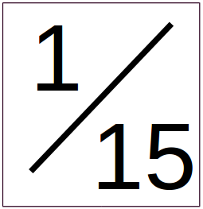

An app for managing 4-lane/-player racing events
Start by dragging a roster .csv onto the webpage. See mammals.csv as an example of the format. Make sure the By Groups/Altogether radio option is selected appropriately (with big enough rosters, racers can be grouped by age or skill and only race within their group)
Generate a heat schedule where each racer gets four heats, once in each lane
Generate a heat schedule where each racer gets eight heats, twice in each lane
 After a heat schedule
has been generated, cycle between three views:
After a heat schedule
has been generated, cycle between three views:
click this button to clear all race results. Then refresh the page (F5) and drag a new roster csv on
Navigate between races in the schedule. "On deck" in the upper right show the names of the racers in the next heat in the schedule
Clear results of the currently-displayed race
 Toggle between scoring modes:
 Toggle on debugging messages. Will
raise lots of popup windows
Toggle on debugging messages. Will
raise lots of popup windows